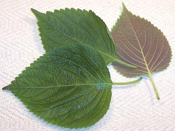
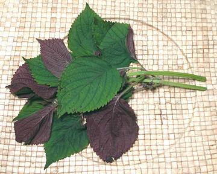
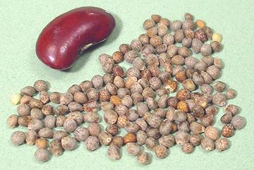
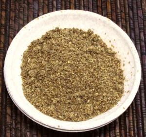
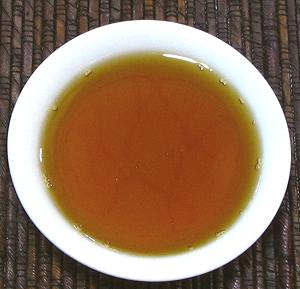

Perilla / Shiso

[Shiso (Japan); Deulkkae, Tulkkae, Kkaennip, Sesame leaf
(Korea); Tia to (Vietnam); Pak Maengda (Laos); Zi su (China); Silem
(Nepal, India); Shiso, Beefsteak plant, Purple mint, Japanese basil,
Wild coleus (North America); Perilla frutescens var
japonica and others]
These large leaves are widely used, particularly in Japan and
Korea, whole or shredded, as a garnish. Young flower spikes are used
as a garnish and to flavor pickles in Japan and Taiwan.
the photo specimens are clearly Korean. The Japanese Shiso leaves
are much more deeply serrated, they lack the purple color on the
underside common with the Korean variety, and the flavor is slightly
different. The Korean variety is much more available here in Los
Angeles as Japanese markets are now few and far between here.
For unknown reasons, the Korean name translates to "Wild Sesame"
or "Sesame Leaf", despite perilla being related to sesame only at the
very distant order level. Actual sesame leaves are rarely eaten,
though edible. The Chinese use perilla mostly as a medicinal to
stimulate the immune system rather than in their cuisine.
Buying / Storing:
Perilla leaves of the Korean
variety are easy to find in markets serving a Korean community, of
which we have many here in Los Angeles. The Japanese variety is harder
to find because Japanese markets have become few and far between here
- but the sushi bars have sources - if they care (most of the
"Japanese" sushi bars here are owned and operated by Koreans). Leaves
should be loosely bagged in the fridge, and will keep only a few days.
More on Herbs.
More on Mints.
Tia-to Leaves

The Vietnamese variety of perilla is considerably smaller than
the Korean or Japanese and is more aromatic. It is used in soups and
stews, and particularly with rice vermicelli dishes called
bún. In Laos they are used in a similar dish called
kao phoon.
Buying / Storing:
These leaves can be found in one or
more of the big Asian markets along Valley Boulevard in Anaheim and in
the Little Saigon district of Orange County. If there is a local
Vietnamese community near where you live, thay may have it, otherwise
you have to grow it yourself (not hard). The leaves should be loosely
bagged in the fridge, and will keep only a few days.
Perilla Seeds

[Deulggae (Korea)]
The seeds themselves are also used. In Korea, they may be added to
a recipe, or toasted, crushed and mixed with sesame and salt as a
condiment. They are similarly used mixed with salt in Japan. In
Nepal and nearby parts of India they are toasted, ground and mixed
with salt, chili and tomato to make a condiment or dip.
Buying / Storing:
Perilla seeds are easily found in
plastic bags in Korean markets, but are not much available anywhere
else. In a sealed container away from heat and light, these seeds
should last up to a year.
Perilla Seed Powder

[Deulkkae-garu (Korean)]
This powder is used in Korea in soups and stews. It is a thickener
that contributes a nutty flavor to the recipe. It is often placed in
a fine strainer, then lowered into the soup, and a wooden spoon is
used to press it through the strainer. This is a method of dispersing
it so there are no lumps.
Buying / Storing:
Perilla Seed Powder is easily
found in plastic bags in Korean markets, but is not much available
anywhere else. In a sealed container away from heat and light, this
powder should last 3 months or so.
Perilla Seed Oil

[Deul Gireum, Beopyu (Korea); Deulkkae Gireum North
Korea]
In most of the world, this oil is used mainly as a component in
varnishes and the like, valued for its fast drying time, but in
Korea is also used as an edible oil. The seeds are high in oil, and
that oil is over 50% Omega 3 (alpha-linolenic acid (ALA)). It is
currently uncertain how well the body can convert vegetable Omega 3
to the EPA and DHA forms found in fish and animals (all three are
needed). Perilla oil is sold in capsules by the supplement industry.
In Korea, This oil is used in seasoned vegetable side dishes
(namul), as a coating for roasted seaweed, and to fry pancake like
dishes (jeon). When used for frying, keep in mind that Omega 3 is
a polyunsaturated oil, so keep temperatures moderated and frying
time short to reduce rancidity from heat (350°F/177°C max.
The flavor of this oil is surprising, in effect rather like fish
sauce without the salt. This may be because of the large amount of
Omega 3, similar to the high Omega 3 content of fish oil.
Buying / Storing:
Perilla Oil can be found in Korean
markets. Generally one brand can be found in the section where around
20 brands of Sesame Seed Oil are displayed. This oil should be kept
in a tightly sealed container away from heat and sunlight, and used
in less than six months due to the ease with which it becomes rancid.
mt_perilz 081230 - www.clovegarden.com
©Andrew Grygus - agryg@clovegarden.com - Photos
on this page not otherwise credited © cg1
- Linking to and non-commercial use of this page permitted